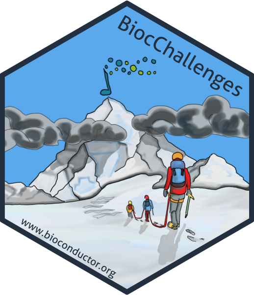

class: center, middle, inverse, title-slide # Challenges from and for the Bioconductor community  ## European Bioconductor Meeting 2020 ### <a href="https://kevinrue.github.io">Kevin Rue-Albrecht</a>, <a href="https://csoneson.github.io">Charlotte Soneson</a>, <a href="https://lgatto.github.io">Laurent Gatto</a>, et <a href="https://eurobioc2020.bioconductor.org/organizing_committee">EuroBioc2020 Organising Committee</a> ### 2020-12-14 (updated: 2020-12-10) --- layout: true <div class="my-header"><img src="img/sticker.png" alt="logo" align="right" height="90%"></div> <div class="my-footer"><span> Kevin Rue-Albrecht               BiocChallenges </span></div> --- # Community spirit <img src="img/minions.jpg" width="100%" style="display: block; margin: auto;" /> --- # The benefits of collaborations .pull-left[ - Combine expertise to overcome issues. - Discuss and refine ideas. - Exposure to other perspectives<br/> (e.g., setup, workflow). - Share transferable skills and best practices<br/> (e.g., git, unit testing, CI/CD). ] .pull-right[ <img src="img/minions-teamwork.png" style="display: block; margin: auto;" /> ] - Gain experience with external collaborators. - Share the challenges and rewards of trying and working out an exciting idea together! - Connect with like-minded community members at all career stages. --- # A (real) example .center[ _Once upon a EuroBioc conference, four postdocs sat together at a break._ ] **Postdoc 1:** "There's so much single-cell data out there... Always the same plots... Sometimes I wish we had a Shiny app to visualise any data stored in any `SummarizedExperiment` object." **Postdoc 2:** "Me too! That would be so helpful to share with collaborators too!" **Postdoc 3:** "Well, I've written a bunch of Shiny apps before. I'd love to help with that." **Postdoc 4:** "Do you know about Shiny dashboards? Mind if I set up the app structure?" **Postdoc 2:** _(Opening up a laptop)_ "Alright, let me create a GitHub repository and add you." **Postdoc 3:** "Great idea! Also, let's create a README and write out wish list of functionality." **Postdoc 1:** "I'll create a Slack channel to keep the conversation going". _(By the end of the conference)_ `SummarizedExplorer` was born (and later renamed `iSEE`!). See the initial README at <https://github.com/iSEE/iSEE/tree/021e3e2> --- # What BiocChallenges is .x-large-li[ - A public platform for the Bioconductor community to announce and contribute to bite-sized projects beneficial to the community at all levels. - An R package (passes `BiocCheck`!) - Each vignette (under `vignettes/challenges`) represents a challenge. - Anyone can submit a new challenge (as a pull request). - Repositories contributing _to_ the challenges are listed on the challenge page. - Each challenge is led by one or more volunteer (point of contact). - Ideally, challenges and contributions will lead to presentations, discussions, or workshops at Bioconductor events. ] --- # What BiocChallenges is _not_ <img src="img/despicable-me-2-poster-header.jpg" style="display: block; margin: auto;" /> --- # A tour of BiocChallenges .center[ <https://github.com/kevinrue/BiocChallenges> ] <img src="img/biocchallenges-readme.png" width="700px" height="450px" style="display: block; margin: auto;" /> --- # A tour of BiocChallenges .center[ <https://github.com/kevinrue/BiocChallenges> ] <img src="img/biocchallenges-challenges.png" width="700px" height="450px" style="display: block; margin: auto;" /> --- # A tour of BiocChallenges .center[ <https://github.com/kevinrue/BiocChallenges> ] <img src="img/biocchallenges-challenge-example.png" width="700px" height="450px" style="display: block; margin: auto;" /> --- # Work in progress .x-large-p[ .pull-left[ - Your feedback is welcome. + Challenge format. + Additional information for each challenge. + Additional functionality. ] ] .pull-right[ <img src="img/minion-taking-notes.jpg" height="100%" style="display: block; margin: auto;" /> ] --- # What can you do this week? (and beyond!) .pull-left[ ## Ideas <i class="fab fa-github"></i> Check out existing challenges at <https://kevinrue.github.io/BiocChallenges/>. <i class="far fa-comments"></i> Network and communicate. - On the conference platform<br/> (e.g., booth, lounge, chat).<br/> _Also available outside live sessions._ - On the Bioconductor Slack at <https://community-bioc.slack.com>. <i class="fas fa-user-friends"></i> Get in touch with like-minded participants and speakers. ] .pull-right[ ## Actions <i class="fab fa-github"></i> Submit a pull request to add a challenge at <https://github.com/kevinrue/BiocChallenges/> <i class="fab fa-github"></i> Contribute to an existing challenge repository. <i class="fab fa-github"></i> Create new challenge repositories. <img src="img/minions-lets-go.jpg" style="display: block; margin: auto;" /> ] --- # At the end of this week .x-large-p[ .center[ **Friday 19:05 - 19:15 (CET)** **BiocChallenges closing presentation** ] <br/> Notify me throughout the week, so that I can report new challenges, ideas, and contributions! ] --- # References <a name=bib-orchestrating2015></a>[Huber, W., V. J. Carey, et al.](#cite-orchestrating2015) (2015NA). "Orchestrating high-throughput genomic analysis with Bioconductor". In: _Nat Methods_ 12.2, pp. 115-21. ISSN: 1548-7105 (Electronic) 1548-7091 (Linking). DOI: [10.1038/nmeth.3252](https://doi.org/10.1038%2Fnmeth.3252). URL: [https://www.ncbi.nlm.nih.gov/pubmed/25633503](https://www.ncbi.nlm.nih.gov/pubmed/25633503). <img src="img/minions-job-done.jpg" style="display: block; margin: auto;" />